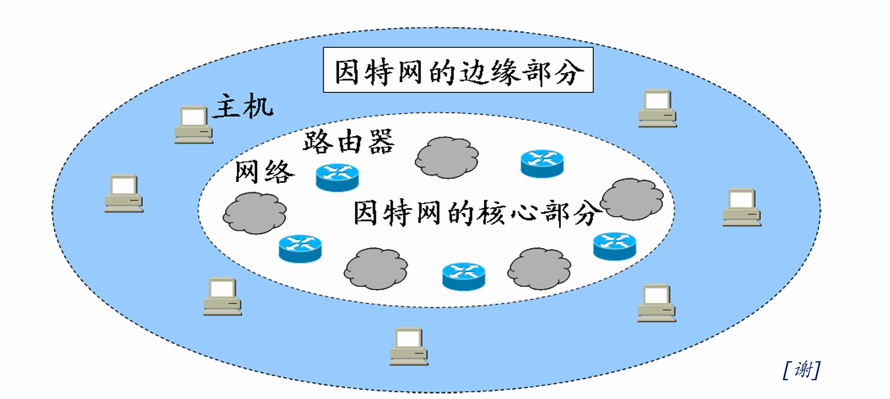
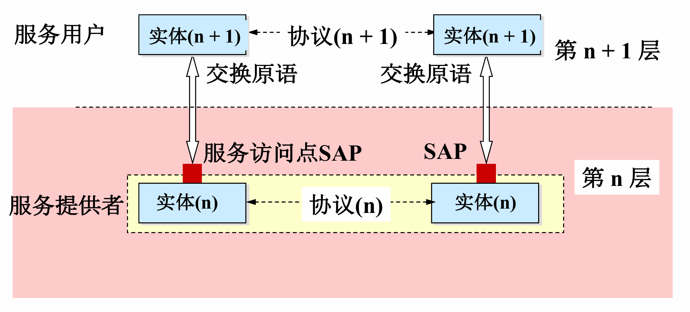

第一章 计算机网络体系结构
408 高频考点提醒：
- 计算机网络是互连的、自治的计算机集合；最基本功能是数据通信；三要素：计算机、通信链路、网络协议（协议是核心）
- 组成：边缘部分（用户直接使用，C/S 与 P2P）+ 核心部分（路由器 + 网络，为边缘服务）；通信子网 = OSI 低三层、资源子网 = 高三层
- 分类：按范围 WAN / MAN / LAN / PAN；按拓扑总线/星/环/网状；按交换方式电路交换 / 报文交换 / 分组交换（存储转发）
- 协议三要素：语法（格式）、语义（动作）、时序（同步）（顺序）；协议是水平的，服务是垂直的
- OSI 七层：物链网传会表应；传输层端到端、网络层点到点；OSI 只是理论标准，未成为事实标准
- TCP/IP 四层：应用/传输/网际/网络接口；网际层核心是 IP（沙漏模型，IP over everything）
- 408 考试默认用五层模型：应用层、传输层、网络层、数据链路层、物理层
- 发送时延 = 数据长度 ÷ 发送速率（由发送端决定，与距离无关）；传播时延 = 信道长度 ÷ 传播速率（电磁波约
m/s，由链路决定） - 时延带宽积 = 传播时延 × 带宽，单位是 bit；RTT = 发送数据到收到确认的时延
- 速率换算以
为底（bit），存储容量换算以 为底（Byte）——两者勿混
（一）计算机网络概述
一、计算机网络的概念与功能
1. 概念（定义）
计算机网络：将分散的、具有独立功能的计算机系统，通过通信设备与线路连接起来，由功能完善的软件实现资源共享和信息传递的系统。
其本质特征是：互连的、自治的计算机集合——
| 关键词 | 含义 |
|---|---|
| 互连 | 通过通信链路、交换设备等连接起来，能互相通信 |
| 自治 | 每台计算机独立运行，无主从之分，不依赖其他计算机也能工作 |
| 集合 | 若干计算机组成的整体，而非单台机器 |
考点：定义抓三个关键词——互连、自治、集合。"自治"是把计算机网络与"多处理器系统（共享内存、由操作系统统一调度）"区分开的关键。
2. 主要功能
| 功能 | 说明 |
|---|---|
| 数据通信 | 传送数据与信息，是最基本、最重要的功能 |
| 资源共享 | 硬件（打印机、磁盘）、软件、数据共享——互连网络的最终目的 |
| 分布式处理 | 多台计算机承担同一任务的不同部分，协同完成（如 Hadoop） |
| 提高可靠性 | 某台计算机故障时，可由替代机继续工作 |
| 负载均衡 | 把任务分配给各计算机，合理分担负载、提高利用率 |
考点：计算机网络最基本的功能是数据通信；最终目的是资源共享。
3. 三要素（组成要素）
| 要素 | 内容 |
|---|---|
| 计算机 | 端系统（主机），是网络的主体 |
| 通信链路与设备 | 双绞线、光纤等线路，路由器、交换机等设备 |
| 网络协议 | 通信双方必须遵守的规则，是计算机网络运行的核心 |
注意：三要素缺一不可。没有协议，通信双方无法"听懂"对方——协议是网络的核心。
二、计算机网络的组成
1. 从组成角度：硬件、软件、协议
| 部分 | 内容 |
|---|---|
| 硬件 | 主机（端系统）、通信链路（线路）、交换设备（路由器、交换机等） |
| 软件 | 网络操作系统、网络应用软件、网络管理软件等 |
| 协议 | 计算机网络的核心，规定通信双方如何交换信息 |
2. 从工作方式角度：边缘部分与核心部分
边缘部分（主机）：用户直接使用，进行通信和资源共享│▼核心部分（路由器 + 网络）：为边缘部分提供转发服务
| 部分 | 组成 | 特点 |
|---|---|---|
| 边缘部分 | 连接在因特网上的主机（端系统） | 由用户直接使用，用于通信和资源共享 |
| 核心部分 | 路由器 + 网络 | 为边缘部分服务（转发分组、路由选择），用户感知不到 |

边缘部分的两大工作方式（C/S 与 P2P）：
| 对比项 | C/S 方式（客户/服务器） | P2P 方式（对等） |
|---|---|---|
| 角色 | 客户主动请求，服务器被动服务，地位不对等 | 对等实体，既是客户又是服务器 |
| 服务器压力 | 服务器承担主要负载，易成为瓶颈 | 无中心服务器，负载分散到各主机 |
| 典型应用 | Web、FTP、电子邮件 | BT 下载、Skype、PPlive |
考点：边缘部分解决"主机之间通信与资源共享"问题，核心部分解决"数据如何转发"问题。C/S 中服务器是被动等待请求的一方。
3. 从功能角度：通信子网与资源子网
| 子网 | 职责 | 对应 OSI 层 |
|---|---|---|
| 通信子网 | 负责数据通信（数据的传输、交换与路由） | 低三层：物理层、数据链路层、网络层 |
| 资源子网 | 负责资源共享与数据处理 | 高三层：会话层、表示层、应用层 |
注意：通信子网 = 低三层（数据通信），资源子网 = 高三层（资源共享/处理）——传输层属于"承上启下"的边界层。
三、计算机网络的分类
1. 按覆盖范围（分布范围）
| 类型 | 全称 | 覆盖范围与特点 |
|---|---|---|
| 广域网 WAN | Wide Area Network | 跨国家、跨地区，覆盖范围最广 |
| 城域网 MAN | Metropolitan Area Network | 覆盖一个城市范围 |
| 局域网 LAN | Local Area Network | 覆盖校园、企业等小范围，速率高、时延小 |
| 个人区域网 PAN | Personal Area Network | 个人设备互联（蓝牙、无线 USB 等） |
2. 按拓扑结构
| 拓扑 | 特点 |
|---|---|
| 总线型 | 所有节点共享一条总线，成本低、易扩展；但总线故障全网瘫痪，冲突多 |
| 星型 | 各节点连到中心节点（如交换机），集中控制、易管理；中心节点故障则全网瘫痪 |
| 环型 | 节点首尾相连成环，数据沿环单向传输；任一节点故障影响全网 |
| 网状型 | 节点之间多条路径冗余，可靠性高、时延小；常用于广域网（代价是造价高） |
3. 按交换方式（重点）
| 交换方式 | 主要特点 | 优点 | 缺点 |
|---|---|---|---|
| 电路交换 | 建立专用物理通路；通话期间独占资源。建立连接 → 传输数据 → 释放连接 | 1. 传输时延小 2. 有序传输 3. 没有冲突 4. 实时性强 | 1. 建立连接时间长 2. 线路利用率低 3. 缺乏灵活性 4. 不同终端难以互通 |
| 报文交换 | 以报文为单位；采用存储转发机制 | 1. 无需建立连接 2. 线路利用率高 3. 可动态分配线路 4. 支持多目标服务 | 1. 引起转发时延（存储转发过程） 2. 节点需要大容量缓冲区 3. 对报文大小有限制 |
| 将报文拆分为分组；采用存储转发机制 | 1. 无需建立连接 2. 线路利用率极高 3. 简化存储管理（分组定长） 4. 减少出错概率和重传数据量 | 1. 引起转发时延 2. 需要传输额外的信息（首部开销） 3. 可能出现失序、丢失或重复分组 |
考点：分组交换是因特网采用的交换方式；电路交换预先分配资源、实时性好但利用率低；报文/分组交换动态分配线路、利用率高但有转发时延。注意：报文交换以"报文"为单位（大），分组交换把报文切小（定长，便于存储管理）。
4. 按使用者：公用网与专用网
| 类型 | 特点 |
|---|---|
| 公用网（公众网） | 任何单位和个人按需付费即可使用，如因特网 |
| 专用网 | 军队、铁路、银行等为本部门专门建造的网络，保密性强，不对外服务 |
5. 按传输技术
| 类型 | 特点 |
|---|---|
| 广播式网络 | 所有主机共享一条信道，任意主机发送，其余均可收到（按地址判断是否接收） |
| 点对点网络 | 每条链路连接一对节点，数据经分组存储转发逐跳传递 |
（二）计算机网络体系结构与参考模型
体系结构与实现：网络的体系结构是计算机网络的各层及其协议的集合，是对网络及其功能实现的精确定义；实现是在遵循体系结构的前提下，用何种软件、硬件实现的问题。
考点：体系结构是抽象的，实现是具体的——体系结构只规定"做什么"，不规定"怎么做"，同一体系结构可有多种实现。
一、分层与协议的基本概念
1. 分层的基本原则
- 各层功能相对独立，每层实现一种相对独立的功能，每层只关心本层的协议
- 层间界面自然清晰，交流尽量少
- 下层为相邻上层提供服务，上层通过接口使用下层功能（下层对上层透明）
- 分层把复杂问题分解为若干较小问题，便于设计、实现与标准化

考点：协议是"水平"的（对等实体之间），服务是"垂直"的（相邻层之间）——协议控制对等层通信，服务描述相邻层之间下对上提供的功能。
2. 协议及其三要素
协议（Protocol）：控制对等实体（同一层次的两个通信节点）之间通信的规则的集合。
| 要素 | 含义 | 典型例子 |
|---|---|---|
| 语法 | 规定数据与控制信息的格式、结构 | TCP 报文段的结构（各字段的位置与长度）由语法决定 |
| 语义 | 规定需要发出何种信息、完成何种动作以及做出何种应答 | TCP 连接建立过程中每次握手执行的操作 |
| 时序（同步） | 规定各操作的条件及事件发生的先后顺序 | TCP 连接过程中三次握手的时序关系 |
考点：协议三要素是高频概念题——"规定格式的是语法，规定动作的是语义，规定顺序的是时序"。同步（时序）是三者中最容易漏答的一个。
3. 服务与接口
服务：下层为紧邻的上层提供的功能调用，是垂直方向的。服务访问点（SAP, Service Access Point）：相邻两层之间交换信息的连接点（接口），例如 TCP 的端口号就是传输层的服务访问点。
服务的分类：
| 分类标准 | 服务类型 | 定义与特点 |
|---|---|---|
| 面向连接服务 | 传输前必须先发出建立连接请求，成功后才能传输，结束后释放连接（如 TCP） | |
| 无连接服务 | 不需要预先建立连接，直接传输，每个分组独立选择路由（如 UDP） | |
| 可靠服务 | 网络具有纠错、检错和确认机制，确保数据正确到达接收方 | |
| 不可靠服务 | 尽力而为（Best Effort）地传输，不保证可靠，由高层处理 | |
| 有确认服务 | 接收方收到数据后必须发回确认，发送方收到确认后才认为发送成功 | |
| 无确认服务 | 接收方收到后不发确认，用于实时性要求高但对错误不敏感的场景 | |
| 通信子网服务 | 物理层、数据链路层、网络层负责数据通信任务 | |
| 资源子网服务 | 会话层、表示层、应用层负责数据处理和资源共享 |
协议与服务的关系：
- 协议是水平的（对等实体之间）；服务是垂直的（相邻层之间）
- 本层协议使用下层提供的服务，并通过接口向相邻上层提供服务
- 只有被上层看得见的功能才是服务（实现细节对上层透明，上层只关心接口）
易错点：① "服务"关心功能不关心实现——同一服务可由不同协议实现，同一协议也可提供不同服务；② 服务仅在同一系统的相邻层之间提供（垂直），不是对等实体之间。
4. 三个重要概念：PDU、SDU、PCI
| 概念 | 全称 | 含义 |
|---|---|---|
| PDU | Protocol Data Unit，协议数据单元 | 对等层之间传送的数据单元 |
| SDU | Service Data Unit，服务数据单元 | 为完成上一层所要求的功能而提供的数据（用户数据部分） |
| PCI | Protocol Control Information，协议控制信息 | 控制协议操作的信息，包括协议号、序列号、确认号、窗口大小等 |
关系：本层 PDU = 本层 SDU + 本层 PCI（加首部/尾部封装）。
注意：第 N 层的 PDU 对第 N−1 层来说就是其 SDU——"上一层的 PDU 是下一层的 SDU"这一递推关系是选择题常客。
二、OSI 七层参考模型

1. 七层结构与各层核心功能
| 层名 | 核心功能 | 传输单位 | |
|---|---|---|---|
| 7 | 应用层 | 用户与网络的界面；提供各种网络服务，典型协议 FTP、SMTP、HTTP | 报文 |
| 6 | 表示层 | 数据格式变换、加密解密、压缩恢复（语法转换） | 报文 |
| 5 | 会话层 | 建立、管理、终止会话；设置校验点（同步点）便于断点续传 | 报文 |
| 4 | 传输层 | 主机进程间的通信（端到端）；可靠/不可靠传输；复用与分用；差错控制；流量控制 | 报文段 |
| 3 | 网络层 | 路由选择、拥塞控制；实现异构网络互联 | 分组（数据报） |
| 2 | 成帧、差错控制、流量控制；MAC 寻址 | 帧 | |
| 1 | 物理层 | 实现比特流的透明传输；定义接口的机械、电气、功能和规程特性 | 比特 |
考点：顺口溜记忆七层——"物链网传会表应"（物理、数据链路、网络、传输、会话、表示、应用）。 易错点：传输层 = 端到端（主机进程之间）；网络层及以下 = 点到点（相邻节点之间）——"端"指主机，点指路由器等中间节点。
2. 对等层通信的概念
对等层通信指同一层次的两个节点之间的逻辑通信：
发送方 应用层 ──应用层协议──► 接收方 应用层发送方 传输层 ──传输层协议──► 接收方 传输层发送方 网络层 ──网络层协议──► 接收方 网络层发送方 数据链路层 ──链路层协议──► 接收方 数据链路层发送方 物理层 ────比特流经信道实际传输────► 接收方 物理层
图：对等层之间通过"协议"逻辑通信（水平方向），实际数据逐层向下封装，经物理层在信道上传输，接收方再逐层解封装向上交付。
- 逻辑通信：对等实体间看似"直接"通信，实际上数据要经过下方各层（垂直方向）传递
- 物理层是唯一实际传输的层次；其余各层都是"虚通信"
- OSI 七层模型是法律上的国际标准（ISO 7498）：层次划分理论完整，但层次过多、实现复杂，未成为事实上的标准
三、TCP/IP 模型
1. 四层结构与主要协议
| 层次 | 主要功能 | 主要协议 |
|---|---|---|
| 应用层 | 面向用户的各种应用服务 | HTTP、FTP、SMTP、DNS、TELNET 等 |
| 传输层 | 进程间端到端通信 | TCP（可靠、面向连接）、UDP（不可靠、无连接） |
| 网际层 | 分组转发与路由选择 | IP、ICMP、ARP、RARP 等 |
| 网络接口层 | 与具体网络技术对接 | 以太网、PPP 等 |
考点：TCP/IP 的应用层相当于 OSI 的应用层 + 表示层 + 会话层；网络接口层相当于 OSI 的数据链路层 + 物理层，但 TCP/IP 未定义该层的具体内容（与具体网络有关）。
2. TCP/IP 四层与 OSI 七层的对比
| OSI 七层 | TCP/IP 四层 | 对应说明 |
|---|---|---|
| 应用层 | 应用层 | TCP/IP 未细分这三层，会话管理、数据表示等功能并入应用层 |
| 表示层 | ||
| 会话层 | ||
| 传输层 | 传输层 | 一一对应（TCP / UDP） |
| 网络层 | 网际层 | 一一对应，核心是 IP 协议 |
| 数据链路层 | 网络接口层 | 合并，且未定义具体内容（以太网、PPP 等均可） |
| 物理层 |
3. 设计思想（沙漏模型）
── 众多应用层协议 ──（HTTP, FTP, SMTP, DNS...）│网际层 IP ← 唯一的核心，最窄处（瓶颈）│── 众多网络技术 ──（以太网, PPP, ATM, 无线...）
图：TCP/IP 沙漏模型——网际层只有 IP 协议，上下层技术均可替换，体现了"IP over everything"的设计思想。
考点：TCP/IP 体系结构的核心设计思想是"IP over everything"——IP 层屏蔽了底层网络技术的差异（网络接口层可以是以太网、PPP 等任何技术），所以 IP 可以运行于任何网络上，这也是"沙漏模型"名称的由来。
四、五层模型（408 最常用）
五层模型综合 OSI 与 TCP/IP 的优点：既保留了 OSI 清晰的层次划分，又借鉴了 TCP/IP 的实用性，是408 考试默认使用的模型。
1. 五层结构与各层协议、设备对照
| 层次 | 核心功能 | 典型协议 | 典型设备 | 传输单位 |
|---|---|---|---|---|
| 应用层 | 提供应用服务，用户与网络的界面 | HTTP、FTP、SMTP、DNS | —（网关可处理高层协议转换） | 报文 |
| 传输层 | 进程间端到端通信，复用分用 | TCP、UDP | — | 报文段 |
| 网络层 | 路由选择、分组转发、拥塞控制 | IP、ICMP、ARP | 路由器 | 分组（数据报） |
| 数据链路层 | 成帧、差错控制、流量控制、介质访问 | 以太网协议（CSMA/CD）、PPP | 交换机、网桥 | 帧 |
| 物理层 | 比特流透明传输，接口特性 | 曼彻斯特编码、NRZ 等 | 中继器、集线器 | 比特 |
考点：设备与层次对应——中继器/集线器（物理层）、网桥/交换机（数据链路层）、路由器（网络层）；网关是"网络层以上"的设备（可进行协议转换，最高可到应用层）。 易错点：集线器与交换机都"连接主机"，但集线器在物理层（转发比特，冲突域不隔离）、交换机在数据链路层（转发帧，隔离冲突域）——功能层次不同，考察"工作在哪个层次"时不可混答。

2. 数据的封装与解封装
发送端逐层封装（每层添加本层首部，即 PCI）：应用层报文（Message）──► 传输层加 TCP/UDP 首部 → 报文段（Segment）──► 网络层加 IP 首部 → 数据报（Datagram）──► 数据链路层加帧首部 + 帧尾部 → 帧（Frame）──► 物理层转为比特流（Bits）发送到信道接收端逐层解封装（去掉本层首部），还原出应用层数据
图：数据封装（发送端从上到下加首部）与解封装（接收端从下到上去首部）过程。
| 步骤 | 封装动作 | 形成的数据单元 |
|---|---|---|
| 应用层 → 传输层 | 加 TCP/UDP 首部 | 报文段 |
| 传输层 → 网络层 | 加 IP 首部 | 数据报 |
| 网络层 → 数据链路层 | 加帧首部与帧尾部 | 帧 |
| 数据链路层 → 物理层 | 转换成比特流 | 比特 |
考点：封装 = 逐层添加首部（PCI）形成各层 PDU；物理层最终把数据转为比特流。上一层的 PDU 作为下一层的 SDU，加上本层 PCI 后成为本层 PDU。
3. 各层小结
- 数据链路层处理帧：以太网帧、PPP 帧；CSMA/CD 是以太网的介质访问控制协议
- 物理层：负责比特流的透明传输，典型编码是曼彻斯特编码（自带时钟信号，用于以太网）
- 各层对等实体之间用协议通信（水平），相邻层之间用接口（SAP）通信（垂直）
注意：408 题目中"TCP/IP 模型"与"五层模型"常常混用（网络接口层 ≈ 数据链路层 + 物理层）；OSI 七层只作为概念考查。答题时若无特殊说明，默认按五层模型回答。
（三）计算机网络性能指标
一、速率、带宽与吞吐量
| 指标 | 定义 | 单位与要点 |
|---|---|---|
| 速率（比特率、数据率） | 数据的传送速率，即单位时间内传送的比特数 | b/s、kb/s、Mb/s、Gb/s；换算以 103 为底 |
| 带宽（Bandwidth） | 网络中通信线路传送数据的能力，即单位时间内能通过的最高数据率 | 单位同速率，表示线路的"额定上限" |
| 吞吐量（Throughput） | 单位时间内实际通过某个网络（或信道、接口）的数据量 | 受带宽或额定速率的限制，是实测值 |
易错点：速率（带宽）单位换算以
为底（1 Mbit/s = bit/s），而存储容量换算以 为底（1 MB = B）——bit 用十进制、Byte 用二进制，选择题常在此设坑。
二、时延（重点）
时延（Delay）：数据（一个报文或分组）从网络一端传到另一端所需的时间。总时延 = 发送时延 + 传播时延 + 处理时延 + 排队时延。
| 时延 | 公式 | 由谁决定 | 说明 |
|---|---|---|---|
| 发送时延（传输时延） | 数据长度 ÷ 发送速率（信道带宽） | 发送端（数据块长度、发送速率） | 数据进入信道所需时间；与传输距离无关 |
| 传播时延 | 信道长度 ÷ 电磁波传播速率 | 链路（信道长度、介质类型） | 电磁波在信道中传播所需时间；与数据长度无关 |
| 处理时延 | 节点分析首部、查找路由表等耗时 | 节点设备（路由器等） | 分组在节点被分析、处理的时间 |
| 排队时延 | 分组在输入/输出队列中等待的时间 | 节点设备（队列长度、流量大小） | 受网络当前流量影响，可随时变化 |
- 电磁波传播速率：真空中约
- 发送时延 = 数据长度 / 发送速率；传播时延 = 信道长度 / 传播速率
考点：发送时延只取决于数据长度和发送速率，与距离无关；传播时延只取决于信道长度和介质，与数据长度无关——"发送时延看发送端，传播时延看链路"。 注意：同一数据在中间节点逐跳转发时，每跳都要重新产生发送时延，但传播时延只与信道总长度有关。
三、时延带宽积、往返时延 RTT 与信道利用率
| 指标 | 定义/公式 | 说明 |
|---|---|---|
| 时延带宽积 | 传播时延 × 带宽（单位：bit） | 表示以比特为单位的链路容量——链路中最多"同时容纳"多少比特 |
| 从发送端发送数据开始，到收到接收端确认为止的总时间 | 包括往返传播时延 + 中间各节点的处理/排队时延 | |
| 信道利用率 | 有数据通过的时间 ÷ 总时间 | 分为信道利用率与网络利用率；利用率过高会引起时延急剧增大 |
注意：时延带宽积的单位是 bit（不是秒）——它回答"链路上最多能有多少比特在飞行"；利用率过高 → 时延急剧增大（排队时延爆炸），这是网络接近拥塞的信号。
四、例题（时延与时延带宽积的综合计算）
题目：主机 A 向主机 B 发送 1KB 数据，链路带宽 100Mbps，信道长度 2000km，电磁波传播速率
| 指标 | 计算过程 | 结果 |
|---|---|---|
| 数据长度 | 1KB = 8 × 1024 = 8192 bit | 8192 bit |
| 发送时延 | 8192 bit ÷ 100Mbps = 8192 ÷ 108 s | 0.08192 ms |
| 传播时延 | 2000km ÷ (2×108 m/s) = 2×106 ÷ 2×108 s | 10 ms |
| 时延带宽积 | 传播时延 × 带宽 = 0.01 s × 108 bit/s | 1×106 bit = 1 Mbit |
结论：
- 发送时延 0.08192ms 远小于传播时延 10ms——短数据经长链路时，传播时延占主导
- 时延带宽积 1Mbit = 125KB：即该链路中最多同时"容纳"125KB 的数据
- 若数据长度增大（如发送 100MB），发送时延将占主导；两类时延谁占主导取决于数据长度与链路长度的相对大小
注意：本题未给出排队时延与处理时延，故总时延 = 发送时延 + 传播时延；实际网络中计算总时延必须把四类时延全部计入。
（四）本章总结
知识结构图：
第一章 计算机网络体系结构├─（一）计算机网络概述│ ├─ 概念与功能：互连+自治的计算机集合；数据通信(最基本)/资源共享/分布式处理/可靠性/负载均衡│ ├─ 三要素：计算机、通信链路与设备、网络协议（核心）│ ├─ 组成：硬件/软件/协议；边缘部分(C/S、P2P) + 核心部分(路由器+网络)│ │ └─ 功能组成：通信子网(低三层) + 资源子网(高三层)│ └─ 分类：WAN/MAN/LAN/PAN；总线/星/环/网状；电路/报文/分组交换；公用网/专用网；广播式/点对点├─（二）体系结构与参考模型│ ├─ 体系结构是抽象的，实现是具体的│ ├─ 分层与协议：三要素(语法/语义/时序)；协议水平、服务垂直；服务分类(连接/确认)；SAP；PDU=SDU+PCI│ ├─ OSI 七层：物链网传会表应；传输层端到端 vs 网络层点到点（理论标准）│ ├─ TCP/IP 四层：应用/传输/网际/网络接口；核心 IP（沙漏模型）│ └─ 五层模型（408 默认）：应用/传输/网络/链路/物理；封装=逐层加首部└─（三）性能指标├─ 速率/带宽/吞吐量：bit 换算 10^3、Byte 换算 2^10├─ 时延：发送(数据长度/速率)+传播(距离/传播速率 2×10^8 m/s)+处理+排队(逐跳重产生发送时延)├─ 时延带宽积=传播时延×带宽(bit)；RTT；信道利用率过高→时延剧增└─ 例题：1KB/100Mbps→0.08192ms；2000km→10ms；时延带宽积=1Mbit
高频考点速记：
| 考点 | 一句话记忆 |
|---|---|
| 网络定义 | 互连的、自治的计算机集合 |
| 三要素 | 计算机、通信链路、网络协议（协议是核心） |
| 最基本功能 | 数据通信 |
| 五大功能 | 数据通信 / 资源共享 / 分布式处理 / 提高可靠性 / 负载均衡 |
| 边缘 vs 核心 | 边缘 = 用户直接使用（C/S、P2P）；核心 = 路由器 + 网络为边缘服务 |
| C/S vs P2P | C/S 地位不对等（服务器易成瓶颈）；P2P 对等、无中心服务器 |
| 通信子网 vs 资源子网 | 通信子网 = 低三层（数据通信）；资源子网 = 高三层（数据处理） |
| 按范围分类 | WAN > MAN > LAN > PAN |
| 拓扑结构 | 总线/星/环/网状；网状可靠性最高（广域网常用） |
| 交换方式 | 电路（独占资源、时延小）/ 报文（存储转发）/ 分组（存储转发 + 定长，因特网采用） |
| 公用网 vs 专用网 | 公用网 = 因特网（付费）；专用网 = 军队/银行等（保密） |
| 广播式 vs 点对点 | 广播式共享一条信道；点对点逐跳存储转发 |
| 体系结构 vs 实现 | 体系结构是抽象的，实现是具体的 |
| 协议三要素 | 语法（格式）、语义（动作）、时序/同步（顺序） |
| 协议 vs 服务 | 协议水平（对等实体）；服务垂直（相邻层）；同一服务可由不同协议实现 |
| 服务分类 | 面向连接（TCP） vs 无连接（UDP）；可靠 vs 不可靠；有确认 vs 无确认 |
| SAP | 服务访问点 = 相邻层交换信息的接口（如 TCP 端口号） |
| PDU 关系 | PDU = SDU + PCI；上一层 PDU = 下一层 SDU |
| OSI 七层 | 物链网传会表应（理论标准，未成事实标准） |
| 端到端 vs 点到点 | 传输层端到端（进程间）；网络层及以下点到点（节点间） |
| OSI vs TCP/IP | TCP/IP 合并：会表应 → 应用层；链路 + 物理 → 网络接口层 |
| 沙漏模型 | 网际层只有 IP（IP over everything），上下层技术可替换 |
| 五层模型 | 应用/传输/网络/链路/物理——408 默认模型 |
| 设备与层次 | 路由器 = 网络层；交换机/网桥 = 链路层；中继器/集线器 = 物理层；网关 = 网络层以上 |
| 封装过程 | 逐层加首部（PCI）；报文 → 报文段 → 数据报 → 帧 → 比特流 |
| 速率换算 | bit 十进制（10³）、Byte 二进制（2¹⁰） |
| 发送时延 | 数据长度 ÷ 发送速率（由发送端决定，与距离无关） |
| 传播时延 | 信道长度 ÷ 传播速率（铜缆/光纤约 2×10⁸ m/s，由链路决定） |
| 四类时延 | 发送 + 传播 + 处理 + 排队 = 总时延 |
| 时延主导 | 短数据 + 长链路 → 传播时延主导（0.08192ms vs 10ms） |
| 时延带宽积 | 传播时延 × 带宽，单位 bit（链路容量） |
| 信道利用率 | 过高 → 时延急剧增大（接近拥塞） |